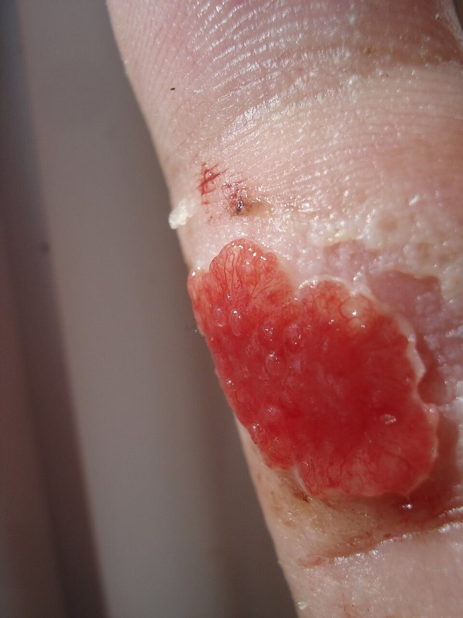
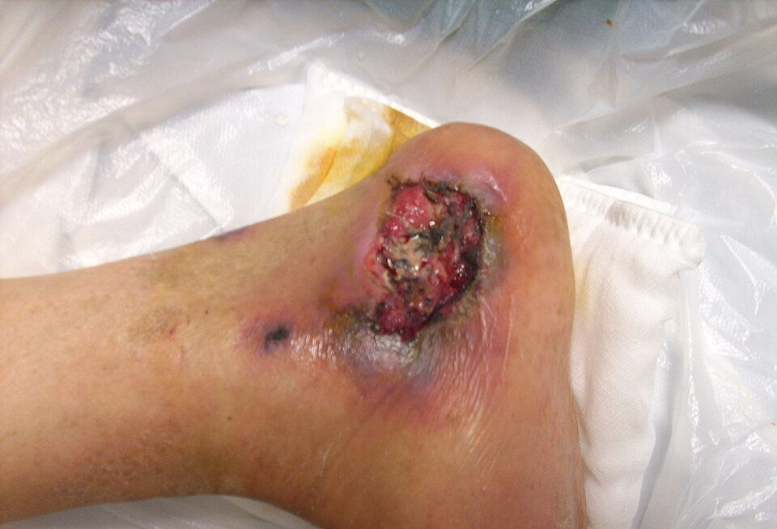
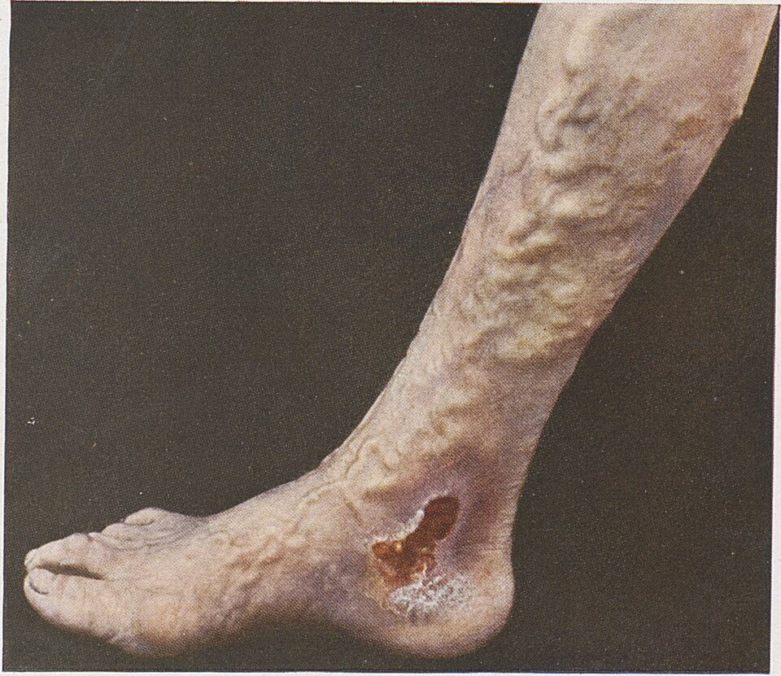
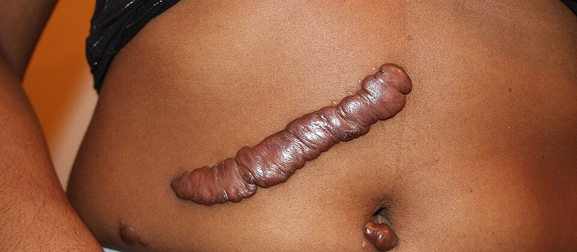

ריפוי פצע
ארבעת שלבי הריפוי, מה עוצר אותו, פצעים כרוניים וצלקות חריגות. ובסוף: טיפול בפצע ליד המיטה
בסוף המפגש תדעו
- לתאר את ארבעת שלבי ריפוי הפצע, את התאים המובילים בכל שלב ואת לוח הזמנים
- לזהות בפצע אמיתי רקמת גרנולציה, פיברין ונמק ולקשר אותם לשלבי הריפוי
- למנות את הגורמים שמעכבים ריפוי ולדעת מה אפשר לתקן
- להבחין בין פצע לחץ, כיב ורידי וכיב עורקי
- להבדיל בין צלקת היפרטרופית לקלואיד ולהכיר את הטיפול
- לבחור חבישה ולהכיר את מקומם של ואקום וחמצן בלחץ
ארבעה שלבים שחופפים
- תיקון ולא התחדשות: במבוגר הפצע נסגר בצלקת. התחדשות מלאה יש רק בעובר ובחלק מהרקמות, כמו כבד ועצם
- השלבים: עצירת דימום, דלקת, שגשוג והבשלה. הם חופפים. בפצע גדול אפשר לראות את כולם יחד
- פצע חריף עובר את כל השלבים בזמן. פצע כרוני נתקע בשלב הדלקת
- סדר התאים: נויטרופילים בשיא ביום 2, מקרופאגים ביום 3, לימפוציטים ביום 7. אחר כך הפיברובלסטים שולטים
הימים הראשונים
- כיווץ כלי דם. אחריו הרחבה וחדירות
- טסיות נצמדות לקולגן החשוף ומשחררות גורמי גדילה (PDGF, TGF-β)
- הפיברין יוצר קריש שהוא גם פיגום לתאים שיגיעו
- אודם, נפיחות, חום וכאב: הרחבת כלי דם וחדירות
- נויטרופילים מנקים חיידקים ורקמה מתה. חיים עד 24 שעות. חתך סטרילי מחלים גם בלעדיהם
- מקרופאגים מגיעים תוך 48 שעות והם המנצחים על הריפוי. עוברים מצורה דלקתית לצורה מתקנת
- זיהום או לכלוך בפצע מאריכים את הדלקת ומעכבים ריפוי
גרנולציה, כלי דם חדשים ועור חדש
- רקמת גרנולציה: רשת נימים, פיברובלסטים, מקרופאגים וקולגן רופף. אדומה, לחה ומדממת בקלות
- כלי דם חדשים: FGF-2 בשלושת הימים הראשונים. אחריו VEGF בימים 4–7. חוסר חמצן הוא הגירוי
- פיברובלסטים מייצרים קולגן. ההשהיה עד שהקולגן מופיע: 3–5 ימים
- אפיתל: מתחיל לנדוד תוך שעות, מהשוליים וממבני העור (זקיקי שערה). מהיר יותר כשקרום הבסיס שלם
- כיווץ הפצע: מיופיברובלסטים מושכים את השוליים פנימה. האקטין מופיע ביום 6 ונעלם אחרי כ-4 שבועות. כיווץ יתר מעל מפרק = התכווצות שמגבילה תנועה

מצלקת אדומה לצלקת חזקה
- אחרי 4 שבועות קצב ייצור הקולגן יורד ומתאזן עם הפירוק. כלי הדם החדשים נסוגים והצלקת מחווירה
- הצלקת קשיחה ופחות גמישה מעור רגיל. אין בה את הבליטות שמעגנות את האפידרמיס. לכן העור החדש נקרע בקלות
- ויטמין C נחוץ לבניית סליל הקולגן. בחסר שלו (צפדינה) כלי הדם שבירים והשיניים מתנדנדות. גם חמצן נחוץ לשלב הזה
- סטרואידים מעכבים ייצור קולגן
כל השלבים בפצע אחד

👆 לחצו על אזור בפצע כדי לקרוא עליו
רקמה אדומה וגרעינית היא גרנולציה: שלב השגשוג. הכיסוי הצהבהב והכהה הוא פיברין, רקמה מתה ושאריות: שלב הדלקת. פצע טוב לריפוי הוא אדום, לח ונקי. רקמה מתה מסירים (הטריה)
בשוליים האפיתל מתקדם והפצע מתכווץ: שלב ההבשלה. העור הסגול והמודלק מסביב מראה שהנזק מהלחץ רחב יותר מהפצע הגלוי. בודקים גם שהעור סביב לא מתרכך מהפרשות
כתם כהה על בליטה גרמית נוספת: התחלה של פצע לחץ חדש. פצעי לחץ נוצרים מעל עצם (עצה, ישבן, עקבים) כשהלחץ ברקמה עולה מעל לחץ הזילוח בנימים (32 מ״מ כספית). מניעה: זיהוי מטופלים בסיכון, שינויי תנוחה קבועים, תזונה והפחתת לחץ
לחפש ולתקן
פצע שנתקע
- הגדרה: פצע שלא נסגר תוך 3 חודשים
- בתוך הפצע: יותר מדי דלקת (IL-1, IL-6, TNF-α), עודף אנזימים שמפרקים רקמה וגורמי גדילה, רדיקלים חופשיים
- חיידקים רבים, לרוב כמה סוגים יחד. לעיתים קרובות הם בתוך ביופילם שנדבק לפצע
- גורמי גדילה שמורחים על הפצע כמעט תמיד נכשלו: האנזימים בפצע מפרקים אותם
- בכל המקרים: מטפלים בסיבה (לחץ, מחלת ורידים או עורקים, סוכר), מנקים רקמה מתה ושומרים על פצע לח
לחץ, מחלת ורידים או מחלת עורקים?

היפרטרופית או קלואיד?

לח, נקי וחם
- מתחת לחבישה סוגרת ולחה האפיתל מכסה פי 2 מהר יותר מפצע שמתייבש
- חבישה סוגרת (סרט שקוף, הידרוקולואיד, הידרוג׳ל): שומרת לחות ומגינה. לא לפצע עם הרבה הפרשה או זיהום
- חבישה סופגת (גזה, קצף, אלגינט): לפצע מפריש. מונעת ריכוך של העור מסביב
- גזה רטובה שמתייבשת: מסירה רקמה מתה, אבל גם גרנולציה חדשה. גם כואבת
- חומרי חיטוי כמו תמיסת Dakin ויוד פוגעים גם בפיברובלסטים. נותנים אותם כשיש סימני זיהום או יותר מ-105 חיידקים בגרם רקמה
ואקום וחמצן בלחץ
- ספוג ולחץ שלילי מעל הפצע
- מוציא בצקת והפרשות, מגדיל את זרימת הדם לעור פי 5 ומעודד גרנולציה
- משמש בפצעים פתוחים, ברגל סוכרתית, בכיבים, בפצעי בטן מורכבים ומעל חתכים סגורים
- מקצר אשפוז ומוזיל טיפול
- חמצן 100% בלחץ של 1.9–2.5 אטמוספרות, 90–120 דקות, 5 עד 6 פעמים בשבוע
- מתאים לרגל סוכרתית ולנזקי קרינה, כתוספת לטיפול. רואים שיפור אחרי 15–20 טיפולים
- קודם פותחים את העורק החסום. חמצן מתחת לעור מתחת ל-35 מ״מ כספית = פצע חסר חמצן
- סיבוך שכיח: פגיעה באוזן התיכונה. נדיר: חזה אוויר
מחקרים שכדאי להכיר
85 מחקרים אקראיים, 16,980 מטופלים. פחות זיהום פצע (יחס סיכון 0.64), פחות פתיחה וסרומה. אבל יותר שלפוחיות ותקלות במכשיר. צריך לטפל ב-21 מטופלים כדי למנוע זיהום אחד. המסקנה: לשימוש נבחר במטופלים בסיכון, לא לכולם
Patel S et al. JAMA Surg 2026;161:1024-321,830 מטופלים עם איסכמיה שמסכנת את הרגל. כשיש וריד ספינוס טוב: מעקף ניתוחי עדיף על צנתור (קטיעה, ניתוח חוזר או מוות: 42.6% לעומת 57.4%). בלי וריד טוב: אין הבדל
Farber A et al. N Engl J Med 2022;387:2305-16840 מטופלים. זיהום פצע 28.4% עם ואקום ו-27.4% עם חבישה רגילה. בניתוח חירום הוואקום לא מנע זיהום
Atherton K et al. JAMA 2025;333:853-63חמישה דברים לקחת למחלקה
- עצירת דימום, דלקת, שגשוג והבשלה. החוזק עולה בשבועות ומבשיל במשך שנה
- פצע אדום, לח ונקי מחלים. פיברין ונמק מסירים
- חמצן, דם, סוכר, תזונה ועישון: הדברים שאפשר לתקן
- כיב ברגל: לבדוק דופק לפני כל דבר. כיב עורקי לא ייסגר בלי זרימה
- קלואיד יוצא מגבולות הצלקת וחוזר אחרי כריתה. היפרטרופית נשארת בגבולות ולרוב נסוגה